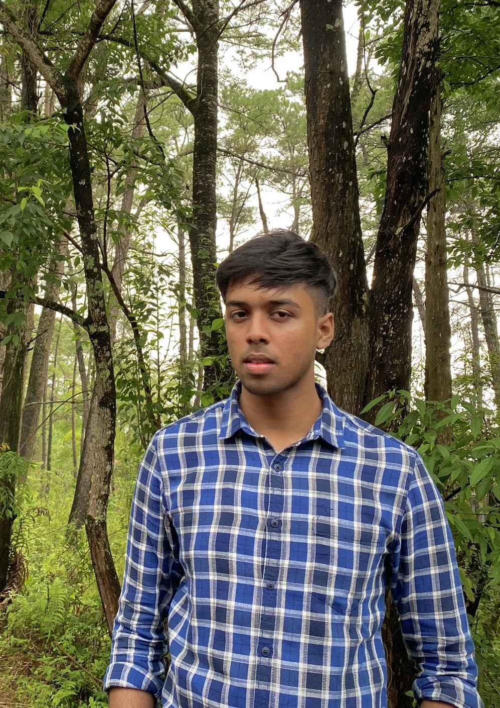

Ayaan Iqbal Hafiz

Summary
I am currently pusuing my B.Tech in Electronics in Communication Engineering. Apart from Electronics, I am interested in Web Development and Digital Marketing.
Education
Don Bosco School, Panbazar, Guwahati
2009-2019Allen Career Institute, Guwahati
2019-2021North Eastern Hill University
BTech in Electronics and Communication Engineering
2022-2026
Experience
Assam Electronics Development Corporation(AMTRON)
I completed my Training/Internship on Internet of Things(IOT) from January, 2023 to February, 2023. I was able to learn the use of boards like Arduino UNO, Arduino Mega, ESP8266(NodeMCU) and use them with LDR sensor,MQ2 gas sensor,HC-SR04 ultrasonic sensor, LM-386 sound sensor,NEO-6M GPS sensor, DHT11 Temperature and Humidity sensor etc and operate them using Arduino IDE.CodeMate Coding Club, NEHU
Working as an active member in the Event Management team. Organised various events-CodeFest coding competitions, typing competition, introduction/induction ceremony.
Volunteering
Skills
- Internet of Things-Fundamentals
- HTML5
- CSS
- Digital Marketing Basics
- Project Management Basics
- Arduino
- Negotiation
- Event Management
- Engineering
Certifications
- IEEE-Cloud computing with AWS
- MSI Project Management Essentials
- Assam Electronics Development Corporation(AMTRON)-Internet of Things
- Bootcamp on Entrepreneurship for North East Region
Languages
Other
Hobbies
Contact Me